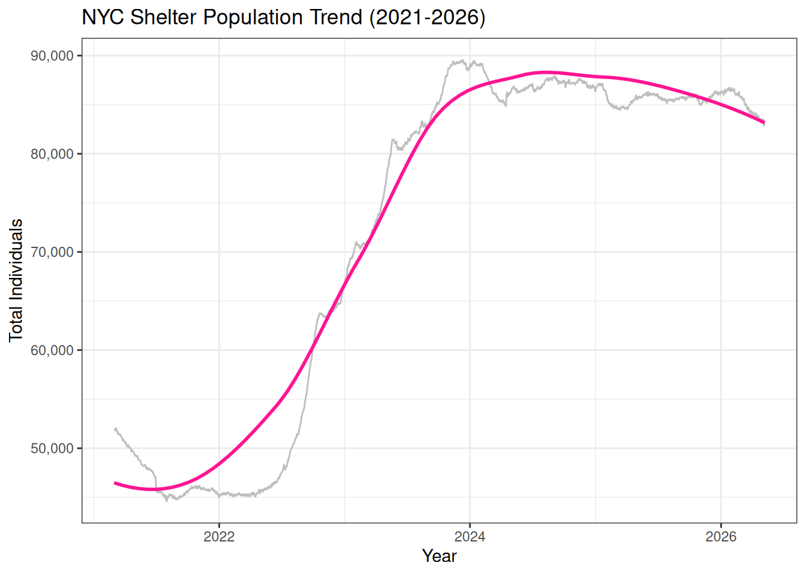
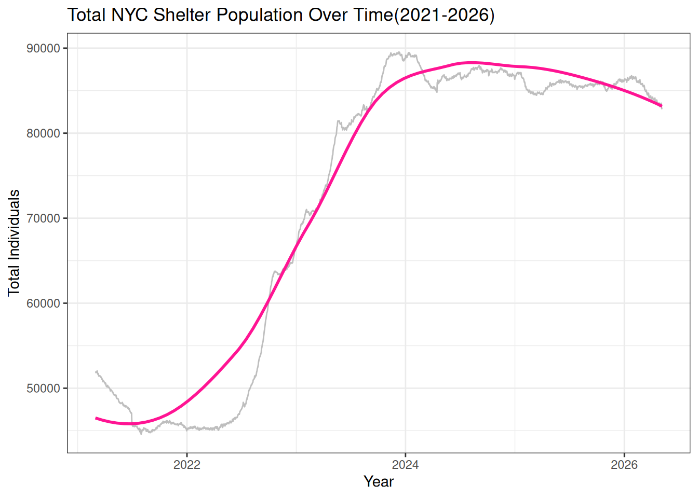
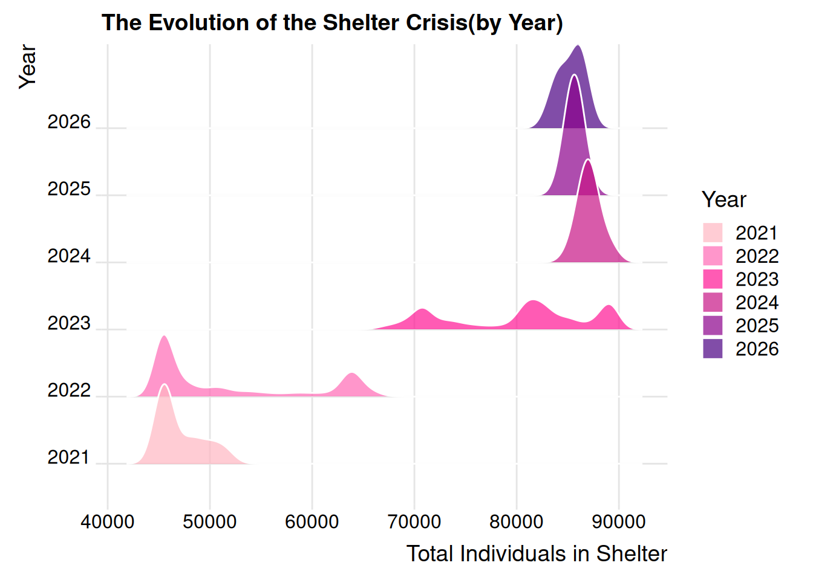
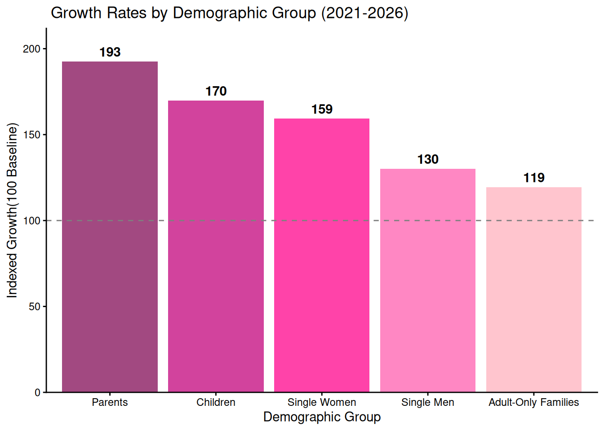
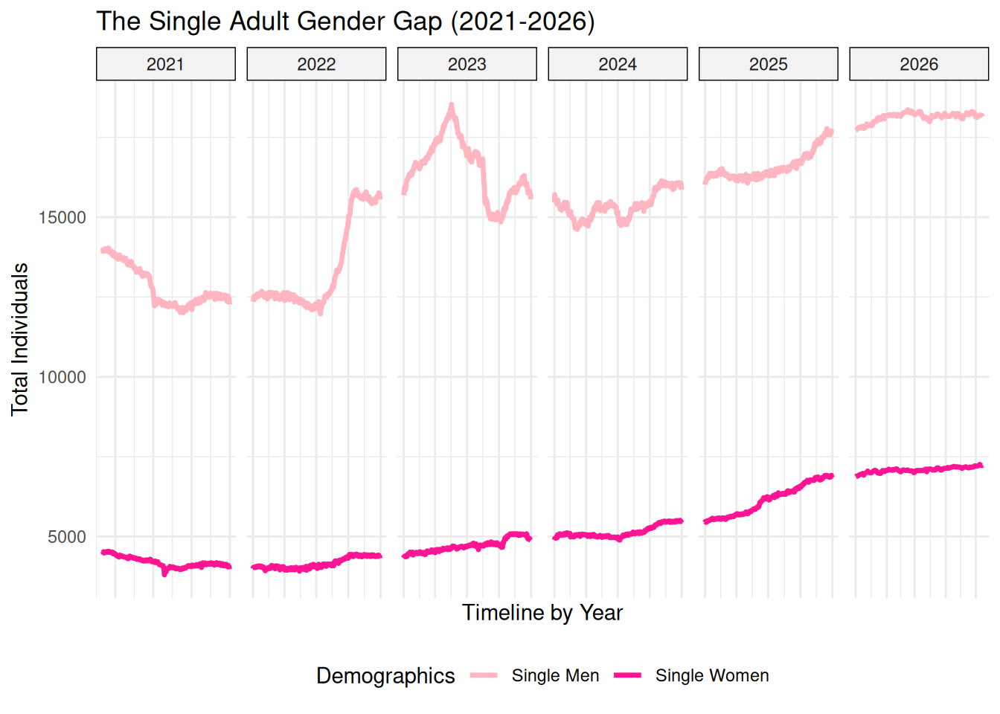
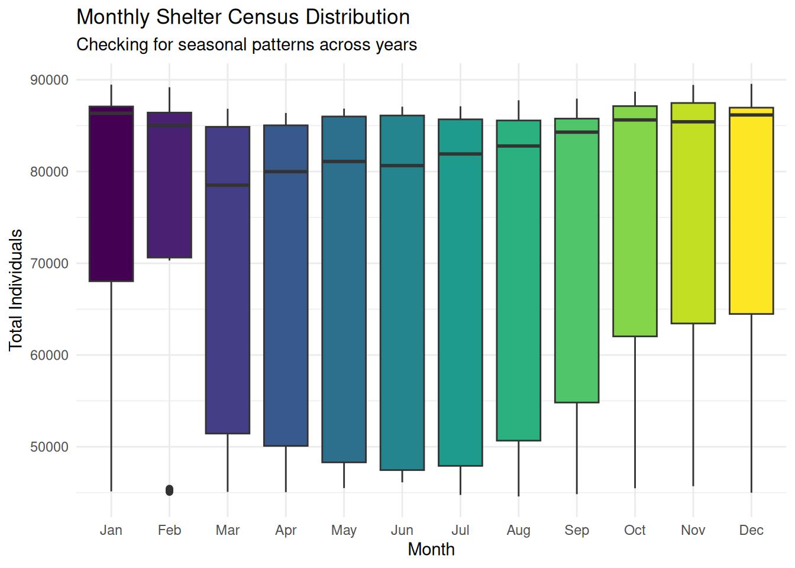

library(tidyverse)
library(ggplot2)
df <- read_csv("https://data.cityofnewyork.us/resource/k46n-sa2m.csv?$limit=5000")
nrow(df)[1] 1889#head(df)
#str(df)
#summary(df)Perpetua Senatus
Homelessness remains one of the most pressing social and administrative challenges facing New York City, impacting thousands of individuals and families daily. My interest in this topic stems from my daily commute; as someone who takes the train to come to campus, I am frequently confronted with the human reality of this crisis. I often see people sleeping on the trains and encounter families with children asking for help. These experiences have left me constantly questioning why these individuals are not provided a safe place to stay for their well-being, are the shelters simply full, or are there other barriers to entry?. To better understand these questions, I chose to study the NYC Department of Homeless Services(DHS) Daily Report because it provides a transparent, high-frequency look at the scale of the city’s shelter system and the specific demographics it serves. This project aims to perform detective work through exploratory data analysis to uncover trends in shelter residency. Specifically, I am interested in studying how the total population has fluctuated over the last few years, whether there are seasonal patterns in census counts, and which subgroups are most responsible for shifts in the overall population.
The data is provided by the New York City Department of Homeless Services(DHS) and represents an official daily census of families and individuals residing within the city’s shelter system. The dataset is updated daily on the NYC Open Data portal. As of the latest records used in this analysis, the dataset contains 13 columns and approximately 1888 rows, with each row representing one Date of Census. The key variables include the Total Individuals in Shelter (sum of all adults and children in the system) and Demographic Breakdowns (Single Adult Men/Women and Families with Children).
Dataset Link: DHS Daily Report- NYC Open Data
library(tidyverse)
library(ggplot2)
df <- read_csv("https://data.cityofnewyork.us/resource/k46n-sa2m.csv?$limit=5000")
nrow(df)[1] 1889#head(df)
#str(df)
#summary(df)# convert date
library(tidyverse)
library(lubridate)
df$date_of_census <-as.Date(df$date_of_census, format = "%m/%d/%Y")
class(df$date_of_census)[1] "Date"range(df$date_of_census)[1] "2021-03-01" "2026-05-02"head(df$date_of_census)[1] "2021-03-01" "2021-03-02" "2021-03-03" "2021-03-04" "2021-03-05"
[6] "2021-03-06"This long list of 0 confirms that all 13 variables contain zero missing values:
colSums(is.na(df)) |> sort (decreasing = TRUE) date_of_census
0
total_adults_in_shelter
0
total_children_in_shelter
0
total_individuals_in_shelter
0
single_adult_men_in_shelter
0
single_adult_women_in_shelter
0
total_single_adults_in_shelter
0
families_with_children_in_shelter
0
adults_in_families_with_children_in_shelter
0
children_in_families_with_children_in_shelter
0
total_individuals_in_families_with_children_in_shelter_
0
adult_families_in_shelter
0
individuals_in_adult_families_in_shelter
0 Graph 1 : This map confirms that our data is 100% complete across all 13 variables. It shows that the DHS has a very reliable and consistent daily reporting process:
library(naniar)
vis_miss(df) +
labs(title="Global Overview of Data Completeness") +
coord_flip() Graph 2: Checking each variable one by one further confirms that every key metric has zero missing values. We can trust that the totals are not being skewed by one group being under-reported:
gg_miss_var(df) +
labs(title ="Missing values by variable",
y ="Number of missing values") +
ylim(0,10)
Summary of patterns: The missing value analysis reveals that the NYC DHS Shelter dataset exhibits a complete case structure, with zero missing values identified across 1000 observations analyzed. This is likely due to the data being an official daily census where each row is an aggregated total of the entire shelter system.
This graph tracks the effectiveness of ‘Right to Shelter’ laws and the impact of rising NYC rent prices. A steady increase suggests that housing affordability policies may not be keeping pace with demand:
library(lubridate)
ggplot(df, aes(x = date_of_census , y = total_individuals_in_shelter))+
geom_line(color="grey") +
geom_smooth(method = "loess", color = "deeppink", se = FALSE) +
labs(title="Total NYC Shelter Population Over Time(2021-2026)",
x = "Year",
y= "Total Individuals")+
theme_bw()
Story: After a period of relative stability in 2021, there is a massive surge starting in late 2022 that continues into 2026, with the population nearly doubling ~ from 45,000 to over 80,000 individuals. This rapid growth suggests that the pace of people entering the system significantly exceeds the city’s ability to transition them into permanent housing.
Ridgeline Distribution by Year
This graph tracks the distribution of the daily census by year. We can see the center of gravity of the shelter system moving toward higher numbers as the crisis evolved:
library(ggridges)
df |>
mutate(Year = factor(year(date_of_census))) |>
ggplot(aes(x = total_individuals_in_shelter, y= Year, fill = Year)) +
geom_density_ridges(alpha = 0.7, color = "white") +
scale_fill_manual(values = c("#FFB6C1", "#FF69B4", "#FF1493", "#C71585", "#8B008B","#4B0082")) +
labs(title="The Evolution of the Shelter Crisis(by Year)",
x = "Total Individuals in Shelter",
y = "Year") +
theme_ridges()
Story: This ridgeline plot reveals that in 2021, the system consistently stayed around 45000 people. By 2024 and 2025, the peaks have flattened and migrated significantly to the right, showing that the high population has become the new normal. Basically, the density curves shifting to the right show the system reaching new baselines.
Demographic Shifts: Families with Children vs. Single Adults This graph tracks
df_long <- df |>
select(date_of_census, total_single_adults_in_shelter, total_individuals_in_families_with_children_in_shelter_) |>
rename("Single Adults" = total_single_adults_in_shelter,
"Families with Children" = total_individuals_in_families_with_children_in_shelter_) |>
pivot_longer(cols = -date_of_census, names_to = "Group", values_to = "Count")
ggplot(df_long, aes(x = date_of_census, y = Count, color = Group)) +
geom_line(size = 1) +
labs(title = "Shelter Demographics: Single Adults vs. Families with Children",
x = "Year",
y = "Number of Individuals") +
scale_color_brewer(palette = "Set1") +
theme_minimal()
Story: This multiline plot reveals that the family population has grown at a much faster rate than the single adult population since 2023. This directly aligns with my personal observations of families with children on the trains.
Detailed Family Composition This graph tracks the specific breakdown of people in family shelters (Adults vs. Children):
df_2025 <- df |>
filter(year(date_of_census) == 2025) |>
select(date_of_census, adults_in_families_with_children_in_shelter, children_in_families_with_children_in_shelter) |>
rename("Adults in Families" = adults_in_families_with_children_in_shelter,
"Children in Families" = children_in_families_with_children_in_shelter) |>
pivot_longer(cols = -date_of_census, names_to = "Subgroup", values_to = "Count")
ggplot(df_2025, aes(x = date_of_census, y = Count, fill = Subgroup)) +
geom_area(alpha = 0.8) +
labs(title = "Composition of Families in Shelters (2025)",
x = "Month",
y = "Number of Individuals") +
scale_fill_manual(values = c("steelblue", "orange")) +
theme_minimal()
Finding: This stacked area chart shows that
This graph investigates whether the people I see sleeping on trains are successfully transitioned into shelters during extreme cold. So, it evaluates the city’s emergency winter response(Code Blue). If the population spikes significantly every January, it shows how weather-related public health policies drive DHS operations.
library(lubridate)
df_monthly <- df |>
mutate(Month = month(date_of_census, label = TRUE))
ggplot(df_monthly, aes(x = Month, y = total_individuals_in_shelter, fill = Month)) +
geom_boxplot(show.legend = FALSE) +
labs(
title = "Monthly Shelter Census Distribution",
subtitle = "Checking for seasonal patterns across years",
y = "Total Individuals") +
theme_minimal()
Story: By using boxplots to look for seasonal patterns, we see that the overall growth trend is so powerful that it has largely erased traditional seasonality. While winter months typically see spikes, the medians for every month are now significantly higher than in previous years.
** Short summary of the most revealing findings of my analysis:**
Take extra care to clean up your graphs, ensuring that best practices for presentation are followed, as described in the audience-ready style section below.
Your project should contain 5-10 graphs. Quality is rewarded over quantity.
Discuss: main takeaways of your exploration, limitations, future directions, lessons learned.
(suggested length: one paragraph)